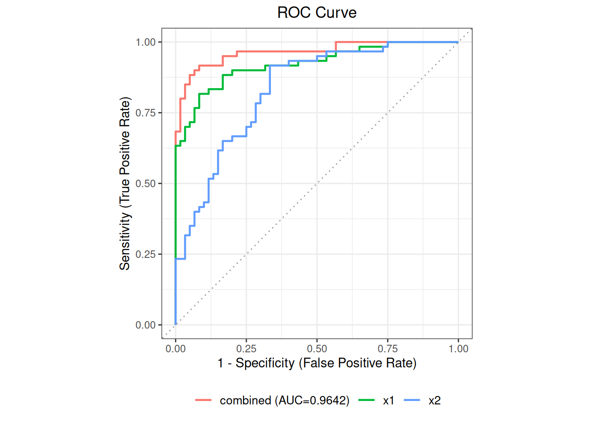

%%{init: {"theme":"base","themeVariables":{"primaryColor":"#EAF2FB","primaryBorderColor":"#2780E3","primaryTextColor":"#212529","lineColor":"#6C757D","secondaryColor":"#EAF7E6","tertiaryColor":"#FFF4E8","fontSize":"13px"},"flowchart":{"nodeSpacing":18,"rankSpacing":24,"padding":6}}}%%
flowchart LR
A["Common cases<br/>Multiple quantitative markers"] --> B["roc() → auc()<br/>Single-marker baseline"]
B --> C["mlr()<br/>Joint logistic model"]
B --> G["auc_compare()<br/>Paired AUC comparison"]
C --> G
C --> D["Coefficients and training-set AUC"]
C --> E["predict()<br/>New-sample probabilities"]
D --> F["Independent validation<br/>Discrimination, calibration, utility"]
E --> F
classDef input fill:#EAF2FB,stroke:#2780E3,color:#212529
classDef process fill:#EAF7E6,stroke:#3FB618,color:#212529
classDef output fill:#F4EEFB,stroke:#9954BB,color:#212529
class A input
class B,C,G,D,E process
class F output
12 ROC Curves and Multivariate Regression
Building on single-marker ROC analysis, this chapter demonstrates how to fit a binomial logistic regression with multiple markers, calculate joint predicted probabilities, plot a training-set ROC, and predict new samples. A joint model must be evaluated for discrimination, calibration, clinical utility, and transportability; an increase in AUC is only one aspect.
ImportantScope of Use
mlr() fits an unpenalized, main-effects logistic regression for the supplied variables. The current implementation does not perform variable selection, automatically construct nonlinear terms, search for interactions, impute missing values, diagnose collinearity, perform internal validation, assess calibration, create decision curves, conduct external validation, or update models.
The joint AUC reported by mlr() uses the same data that fitted the model and therefore represents apparent performance. Its Hanley–McNeil interval also does not correct for optimism from model fitting and variable selection. Intervals from predict() are confidence intervals for the mean predicted probability due to model-coefficient uncertainty, not prediction intervals for future individual outcomes.
The multiple-marker workflow is:
Code
library(ivdtools)
library(readr)12.1 Main Functions
| Function | Main purpose | Main result |
|---|---|---|
roc() |
Build a common complete-case object from multiple markers | Marker values, reference state, and single-marker directions |
auc() |
Establish a single-marker performance baseline | AUC, Hanley–McNeil SE, and CI for each marker |
mlr() |
Fit a named multivariate logistic model | Model, coefficients, predicted probabilities, and training ROC/AUC |
auc_compare() |
Compare two ROC curves from the same subjects | AUC difference, SE, CI, z, and P value |
predict() |
Predict training data or new data with a saved model | Probability, SE, CI, and fixed 0.5 classification |
plot() |
Overlay original-marker and joint-model ROCs | ggplot figure |
summary() |
Summarize all analyses already run | Single-marker and all named-model results |
The complete arguments, direction rules, AUC, and interval formulas for roc() and auc() are given in the previous chapter. This chapter focuses on the joint-model interface.
12.1.1 Multivariate Logistic Regression with mlr()
Code
mlr(x, cols = NULL, name = NULL, ...)| Argument | Description |
|---|---|
x |
A roc object on which auc() has already been run. |
cols |
Marker columns to enter the model; NULL uses all markers in the object. |
name |
Unique model name; if omitted, names are generated as MLR01, MLR02, and so on. |
... |
Other arguments passed to stats::glm(), such as control options; the formula and binomial family are fixed by the function. |
Let \(Y_i\in\{0,1\}\). After selecting \(p\) markers, the current function fits
\[ \eta_i=\beta_0+\sum_{j=1}^{p}\beta_jx_{ij}, \qquad \pi_i=P(Y_i=1\mid\mathbf x_i) =\frac{\exp(\eta_i)}{1+\exp(\eta_i)}. \]
Coefficients are estimated by binomial maximum likelihood. Holding other variables constant, a one-unit increase in \(x_j\) multiplies the odds of a positive outcome by
\[ \operatorname{OR}_j=\exp(\beta_j). \]
This is not a risk ratio and does not represent a causal effect. If variables are measured in very small or very large units, rescale them before modeling according to the prespecified plan so that coefficients have interpretable units.
The formula is fixed as reference_binary ~ x1 + x2 + ...; squared terms, splines, and interactions are not added automatically. roc() has already established common complete cases using all initial cols, so a submodel from mlr(cols=...) still uses the same analysis set. This helps compare nested marker combinations but is not a substitute for missing-data handling.
After fitting, an empirical ROC is constructed from the fitted probabilities \(\widehat\pi_i\) in the same cases, with direction fixed at geq so that larger probabilities indicate a greater tendency to be positive. The joint AUC SE and 95% CI continue to use the single-curve Hanley–McNeil formula from the previous chapter.
Each model is stored in mlr_results[[name]]. Main fields are:
| Field | Meaning |
|---|---|
formula, cols |
Actual formula and predictors |
fit, fit_summary |
glm object and its summary |
predicted |
Fitted probabilities in the training set |
auc, auc_se, ci_lower, ci_upper |
Training-set AUC and approximate interval |
roc_curve |
Complete cutoff metric table for the training probabilities |
The updated roc object is returned and the new model is stored in mlr_results[[name]].
WarningAn AUC Increase Does Not Validate a Model
The single-marker and joint-model ROCs come from the same subjects and are correlated; use auc_compare() for a paired comparison. However, the joint probabilities are fitted from the same outcome data. EP24 and DeLong treat input scores as fixed and do not correct for model fitting, variable selection, or overfitting optimism. Therefore a paired P value cannot replace internal validation, independent validation, calibration, or assessment of clinical net benefit.
12.1.2 Paired AUC Comparison with auc_compare()
Code
auc_compare(
x,
curves,
method = c("ep24", "delong"),
conf.level = 0.95,
rating_method = c("pearson", "kendall"),
name = NULL
)| Argument | Description |
|---|---|
x |
The same roc object with the required auc() or mlr() analysis completed. |
curves |
Exactly two curve names: original markers, named MLR models, or one of each. The difference is first minus second. |
method |
Default "ep24", the EP24-A2 Hanley–McNeil paired approximation; "delong" uses nonparametric paired covariance. |
conf.level |
Confidence level for the AUC-difference interval. |
rating_method |
Within-group score-correlation method for EP24; Pearson is the default for continuous laboratory results and Kendall can be used for ordinal ratings. DeLong does not use this argument. |
name |
Optional result name; if omitted, it is generated from the two curve names and method. |
The function accepts curves only from the same roc object, ensuring fully paired positive and negative states and complete cases. The result is stored in auc_comparisons[[name]] and contains both AUCs, their SEs, the difference, difference SE, confidence interval, z statistic, P value, and method-specific correlation or covariance information. summary() prints all saved comparisons.
The EP24 method first calculates the correlation between the two scores within the positive and negative groups, averages the two correlations, and combines that value with the average AUC to linearly interpolate the correlation between the two AUC estimates from EP24-A2 Table 5. If the coordinates fall outside the table range, the nearest boundary is used and the result and console output are marked explicitly. DeLong directly estimates the covariance of the two AUCs from paired rank contributions in the positive and negative groups and does not use the EP24 lookup approximation.
12.1.3 Probability Prediction with predict()
Code
predict(
object,
mlr = NULL,
newdata = NULL,
column_map = NULL
)| Argument | Description |
|---|---|
object |
A roc object containing at least one mlr() result. |
mlr |
Model name. It may be omitted when the object contains one model and is required when it contains multiple models. |
newdata |
New data frame; NULL returns fitted results for the common complete-case training data. |
column_map |
Named character vector where names are new-data columns and values are training-model columns, such as c(new_x1="x1"). |
For a new-sample design vector \(\mathbf x_0=(1,x_{01},\ldots,x_{0p})^\mathsf T\), the link-scale prediction and its standard error are
\[ \widehat\eta_0=\mathbf x_0^\mathsf T\widehat{\boldsymbol\beta}, \qquad \operatorname{SE}(\widehat\eta_0) =\sqrt{\mathbf x_0^\mathsf T \widehat{\operatorname{Cov}}(\widehat{\boldsymbol\beta})\mathbf x_0}. \]
The function first forms, on the logit scale,
\[ \widehat\eta_0\pm z_{0.975}\operatorname{SE}(\widehat\eta_0), \]
and transforms the bounds back to the probability scale with \(\operatorname{logit}^{-1}\) to obtain ci_lower and ci_upper. The probability-scale pred_se uses the delta method:
\[ \operatorname{SE}(\widehat\pi_0) \approx \operatorname{SE}(\widehat\eta_0) \widehat\pi_0(1-\widehat\pi_0). \]
pred_class is fixed at \(I(\widehat\pi_0\ge0.5)\); the current interface cannot change this probability threshold. If a study protocol uses another decision threshold, classify pred_prob separately according to that prespecified rule and record it explicitly.
The function returns a data frame containing input row identifiers, pred_prob, pred_se, ci_lower, ci_upper, and pred_class.
12.1.4 ROC Plotting and Summary
plot() invisibly returns a ggplot object; summary() prints and invisibly returns the input roc object.
Code
plot(x, curves = NULL, cutpoint = NULL,
type = c("roc", "cutoff"))
summary(x)curves uses the same curve namespace as auc_compare(): it can contain original marker names or MLR model names. plot(x, curves="all") draws all original markers and saved models; plot(x, curves=c("x1", "combined")) can mix them, while specifying only "combined" draws only that model. curves=NULL retains the default of plotting all original markers. type="cutoff" supports only one original marker in curves; cutoff plots for multivariate model probabilities are not currently supported. cutpoint labels only the selected original marker. summary() prints all saved models and auc_compare() results.
12.2 Analysis Examples
12.2.1 Teaching Data: A Joint Model with Two Markers
Code
mlr_dat <- as.data.frame(read_csv(
"./data/012-ROC曲线与多元回归/roc-multimarker.csv",
show_col_types = FALSE
))
head(mlr_dat) sid ref x1 x2
1 1 0 5.510540 8.298655
2 2 0 3.188811 12.942968
3 3 0 8.126533 12.351778
4 4 0 6.159571 16.105370
5 5 0 11.118763 11.867919
6 6 0 2.736035 19.585368First calculate the AUC of both original markers on the same common-case set:
Code
mlr_fit <- roc(
mlr_dat, cols = c("x1", "x2"),
reference = "ref", id = "sid"
)
mlr_fit <- auc(mlr_fit)
AUC Table
Column AUC 95% CI Direction
------------------------------------------------------------
x1 0.9219 [0.8712, 0.9727] geq
x2 0.8322 [0.7587, 0.9057] geqCode
mlr_fit
ROC Analysis
Data class: data.frame
Total rows: 120
Complete cases: 120
Reference: ref (binary)
Reference coding: binary (0/1)
Positive / Neg: 60 / 60
Evaluation cols: 2 (x1, x2)
Duplicate IDs: none
Analysis slots:
[ ] Describe
[x] AUC
[ ] Paired AUC comparison
[ ] Cutoff
[ ] MLRThe AUCs of x1 and x2 are 0.9219 and 0.8322, respectively; both directions are geq. Next fit the prespecified main-effects model with two markers:
Code
mlr_fit <- mlr(
mlr_fit, cols = c("x1", "x2"), name = "combined"
)
Multivariate Logistic Regression (combined)
--------------------------------------------------
Formula: reference_binary ~ x1 + x2
n = 120 (positive = 60, negative = 60)
AUC = 0.9642 [0.9298, 0.9985]
Coefficients:
Estimate Std. Error z value Pr(>|z|)
(Intercept) -13.6586717 2.7569949 -4.954188 7.263286e-07
x1 0.7638502 0.1549103 4.930919 8.184356e-07
x2 0.3949617 0.1064673 3.709700 2.075049e-04
* Note: AUC is evaluated on the same data used for fitting;
the estimate may be optimistic.The fitted equation is
\[ \operatorname{logit}(\widehat\pi) =-13.6587+0.76385x_1+0.39496x_2. \]
Holding the other marker constant, a one-unit increase in x1 and x2 multiplies the adjusted odds by approximately \(\exp(0.76385)=2.146\) and \(\exp(0.39496)=1.484\), respectively. The exponentiated intercept usually has no practical interpretation because \(x_1=x_2=0\) may lie outside the data range.
The joint model has a training-set AUC of 0.9642 and a 95% CI of 0.9298–0.9985. Compare the joint model with each original marker using EP24 paired comparisons:
Code
mlr_fit <- auc_compare(
mlr_fit, curves = c("combined", "x1"), method = "ep24"
)
Paired AUC Comparison
Curves: combined - x1
Method: EP24-A2 Hanley-McNeil paired approximation
Subjects: 120 (positive = 60, negative = 60)
AUC combined: 0.964167
AUC x1: 0.921944
Difference: 0.042222
SE difference: 0.022111
95.0% CI: [-0.001115, 0.085559]
z = 1.909555
p-value: 0.0561906
Mean within-group rating correlation: 0.660442
EP24 area correlation: 0.538934
Note: fitted training probabilities are treated as fixed scores;
model optimism and fitting uncertainty are not corrected.Code
mlr_fit <- auc_compare(
mlr_fit, curves = c("combined", "x2"), method = "ep24"
)
Paired AUC Comparison
Curves: combined - x2
Method: EP24-A2 Hanley-McNeil paired approximation
Subjects: 120 (positive = 60, negative = 60)
AUC combined: 0.964167
AUC x2: 0.832222
Difference: 0.131944
SE difference: 0.035277
95.0% CI: [0.062803, 0.201085]
z = 3.740275
p-value: 0.000183819
Mean within-group rating correlation: 0.445998
EP24 area correlation: 0.357226
Note: fitted training probabilities are treated as fixed scores;
model optimism and fitting uncertainty are not corrected.| comparison | auc_difference | SE | CI_lower | CI_upper | z | P_value |
|---|---|---|---|---|---|---|
| combined - x1 | 0.04222 | 0.02211 | -0.00111 | 0.08556 | 1.90955 | 0.05619 |
| combined - x2 | 0.13194 | 0.03528 | 0.06280 | 0.20109 | 3.74028 | 0.00018 |
These comparisons address correlation between curves caused by the same subjects. However, the joint probabilities are still fitted from these 120 cases; the paired test does not correct for model-fitting uncertainty or optimism and does not evaluate a validation set. The result cannot be described as confirmed clinical benefit.
Code
plot(mlr_fit, curves = "all")
Predict new samples and map column names:
Code
new_patients <- data.frame(
x1 = c(7, 12),
x2 = c(16, 21)
)
new_predictions <- predict(
mlr_fit, mlr = "combined", newdata = new_patients
)
new_predictions x1 x2 pred_prob pred_se ci_lower ci_upper pred_class
1 7 16 0.1200103 0.05313595 0.04840777 0.2677265 0
2 12 21 0.9781557 0.01751040 0.89984790 0.9955390 1The predicted probabilities for the two cases are 0.1200 and 0.9782, displayed as 0 and 1 using the built-in 0.5 threshold. The interval reflects parameter uncertainty for the fitted mean probability; it does not include the future individual’s binomial outcome randomness, model error, or population shift.
When new data use different column names, the mapping direction is “new column name = training column name”:
Code
renamed_patients <- data.frame(
marker_a = c(7, 12),
marker_b = c(16, 21)
)
mapped_predictions <- predict(
mlr_fit,
mlr = "combined",
newdata = renamed_patients,
column_map = c(marker_a = "x1", marker_b = "x2")
)12.2.2 CLSI EP24-A2 Appendix D: Two Paired ROCs
OxLDL and LDL in EP24 Appendix D were measured in the same 50 subjects, so their AUCs are correlated. First calculate both empirical AUCs and single-curve Hanley–McNeil intervals in one roc object, then call auc_compare(); common complete cases preserve the pairing.
Code
ep24_pair <- as.data.frame(read_csv(
"./data/公共/std-ep24-appendix-d.csv",
show_col_types = FALSE
))
ep24_pair_fit <- roc(
ep24_pair, cols = c("oxldl", "ldl"),
reference = "diagnosis", id = "id"
)
ep24_pair_fit <- auc(ep24_pair_fit)
AUC Table
Column AUC 95% CI Direction
------------------------------------------------------------
oxldl 0.7995 [0.6777, 0.9213] geq
ldl 0.5617 [0.4012, 0.7222] geqCode
ep24_pair_fit
ROC Analysis
Data class: data.frame
Total rows: 50
Complete cases: 50
Reference: diagnosis (binary)
Reference coding: binary (0/1)
Positive / Neg: 28 / 22
Evaluation cols: 2 (oxldl, ldl)
Duplicate IDs: none
Analysis slots:
[ ] Describe
[x] AUC
[ ] Paired AUC comparison
[ ] Cutoff
[ ] MLRThe default EP24 method uses standard equation (6):
\[ \operatorname{SE}(\widehat A_1-\widehat A_2) =\sqrt{\operatorname{SE}_1^2+\operatorname{SE}_2^2 -2r\operatorname{SE}_1\operatorname{SE}_2}, \]
where \(r\) is the AUC correlation interpolated from EP24 Table 5 using the average within-group score correlation and average AUC. DeLong does not use this lookup approximation; it estimates the covariance from paired rank contributions for each positive and negative subject.
Define
\[ \phi(x,y)=I(x>y)+\frac12I(x=y). \]
For marker \(k\), with \(m\) positives and \(n\) negatives, construct
\[ V_{10,i}^{(k)}=\frac1n\sum_{j=1}^{n}\phi(X_{ki},Y_{kj}), \qquad V_{01,j}^{(k)}=\frac1m\sum_{i=1}^{m}\phi(X_{ki},Y_{kj}). \]
The DeLong covariance estimate for the two-marker AUC vector is
\[ \widehat{\boldsymbol\Sigma} =\frac{\operatorname{Cov}(\mathbf V_{10})}{m} +\frac{\operatorname{Cov}(\mathbf V_{01})}{n}. \]
Let \(\mathbf c=(1,-1)^\mathsf T\). The standard error of \(\widehat\Delta=\widehat A_{\mathrm{OxLDL}}-\widehat A_{\mathrm{LDL}}\) is
\[ \operatorname{SE}(\widehat\Delta) =\sqrt{\mathbf c^\mathsf T\widehat{\boldsymbol\Sigma}\mathbf c}. \]
Code
ep24_pair_fit <- auc_compare(
ep24_pair_fit,
curves = c("oxldl", "ldl"),
method = "ep24"
)
Paired AUC Comparison
Curves: oxldl - ldl
Method: EP24-A2 Hanley-McNeil paired approximation
Subjects: 50 (positive = 28, negative = 22)
AUC oxldl: 0.799513
AUC ldl: 0.561688
Difference: 0.237825
SE difference: 0.075261
95.0% CI: [0.090315, 0.385334]
z = 3.159979
p-value: 0.0015778
Mean within-group rating correlation: 0.511818
EP24 area correlation: 0.481818
Table lookup used bounded coordinates: correlation 0.5118, AUC 0.7000Compare live values with the EP24 published values in the check table:
| Standard position | Statistic | Standard result | ivdtools result |
|---|---|---|---|
| OxLDL | AUC | 0.8000 | 0.799513 |
| OxLDL | SE | 0.0620 | 0.062140 |
| OxLDL | CI_lower | 0.6800 | 0.677718 |
| OxLDL | CI_upper | 0.9200 | 0.921308 |
| LDL | AUC | 0.5600 | 0.561688 |
| LDL | SE | 0.0820 | 0.081895 |
| LDL | CI_lower | 0.4000 | 0.401174 |
| LDL | CI_upper | 0.7200 | 0.722203 |
| Difference | AUC_difference | 0.2400 | 0.237825 |
| Difference | SE | 0.0750 | 0.075261 |
| Difference | CI_lower | 0.0900 | NA |
| Difference | CI_upper | 0.3900 | NA |
| Difference | z | 3.1600 | 3.159979 |
| Difference | p_value | 0.0016 | 0.001578 |